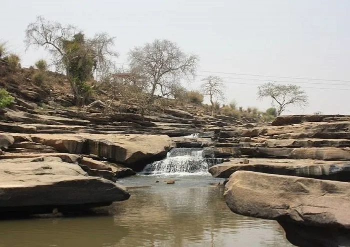

Home / Blog / Vindhyachal Yatra Guide

Located on the bank of River Ganga in Mirzapur district of Uttar Pradesh, Vindhyachal Dham is one of the most powerful Shakti Peeths in India. It is believed that Goddess Mahalakshmi resides here in the form of Maa Vindhyavasini Devi.
Devotees from around the world visit Vindhyachal to complete the sacred Trikon Yatra (Triangle Pilgrimage), which connects the three cosmic energies of Laxmi, Kali, and Saraswati.
🌺 The Sacred Trikon Parikrama Shrines
- Maa Vindhyavasini Temple: The main shrine housing the divine idol of Goddess Vindhyavasini, situated right on the Ganga ghats.
- Kali Khoh Temple: Cave shrine dedicated to Goddess Maha Kali, nestled inside dense forest hills ~2 km from the main temple.
- Ashtabhuja Devi Temple: Hilltop shrine of Goddess Maha Saraswati (Ashtabhuja Devi), accessible via steps or modern aerial ropeway.
🔱 Book Vindhyachal Tour Package Today
Book private AC cabs from Varanasi, Prayagraj, or Mirzapur with temple VIP assistance and Trikon Yatra guide.